En af ministeriets syv anbefalinger er, at skolen understøtter dialog og erfaringsudveksling blandt det pædagogiske personale (Børne- og Undervisningsministeriet, 2025). Det er en kulturopgave lige så meget som en praktisk opgave.
Etienne Wengers teori om praksisfællesskaber beskriver læring som noget, der opstår gennem deltagelse i et fællesskab, hvor medlemmerne deler erfaringer og skaber fælles forståelser. Et praksisfællesskab bæres ifølge Wenger af tre komponenter. Fælles virksomhed er det formål eller den aktivitet, der samler fællesskabets medlemmer og giver dem en fælles retning. Gensidigt engagement er den aktive deltagelse og det samarbejde, hvor medlemmerne støtter hinanden og deler erfaringer. Fælles repertoire er de praksisser, værktøjer og ressourcer, som medlemmerne udvikler og deler over tid (Wenger, 1998; Conrath, 2024).
Læring opstår ifølge Wenger gennem forhandling af mening, hvor medlemmerne løbende skaber en fælles forståelse af deres praksis (Wenger, 1998). Overført til skolens arbejde med generativ AI kan det betyde, at lærergrupper på tværs af fag mødes for at drøfte konkrete erfaringer, for eksempel hvilke prompts der har fungeret godt i et undervisningsforløb, og i fællesskab udvikler en delt praksis for, hvornår og hvordan AI giver mening at bruge.
Aabenraa Kommune har selv oplevet dette mønster i praksis. I kommunale netværksmøder opstår der et domæne, altså en fælles interesse i at bruge AI fagligt forsvarligt, et fællesskab, hvor lærere engagerer sig sammen i aktiviteter og diskussion, og en praksis, et delt repertoire af erfaringer og løsninger, der vokser frem over tid (Conrath, 2026).
Et konkret bud på et fælles didaktisk sprog er en model med fem dimensioner for undervisningen:
- Læring I AI At forstå AI's virkemåde, algoritmer og etik.
- Læring MED AI At bruge AI som støtte i egen læring.
- Læring OM AI Viden om muligheder, grænser og risici.
- Læring PÅ TRODS AF AI At fastholde rum til refleksion og fordybelse.
- Læring UDEN AI At traditionel læring gennem fællesskab, bevægelse og håndværk stadig har sin egen værdi.
Modellen er ikke enten-eller, men et bevidst valg, underviseren tager forløb for forløb (Falck, u.å.; Conrath, 2026).
Skolen kan derfor med fordel skabe rum, både fysiske og organisatoriske, hvor lærere kan dele både succeser og fejlslagne forsøg uden at frygte at blive vurderet på det. En kultur, hvor det er trygt at eksperimentere og fejle, er formentlig en forudsætning for, at kollegial videndeling reelt finder sted.
BemærkTeknologien kan støtte de fagligt svageste elever, men kan samtidig skabe øget ulighed mellem eleverne. Mistænkeliggørelse af elevernes AI-brug skaber i sig selv et dårligt læringsmiljø.
- Børne- og Undervisningsministeriet (2025). Anbefalinger om brug af generativ AI i undervisningen i folkeskolen. Styrelsen for Undervisning og Kvalitet. https://uvm.dk/aktuelt/nyheder/2025/juni/250626-offentliggoerelse-af-anbefalinger-om-brug-af-generativ-ai-i-undervisningen-i-folkeskolen/
- Conrath, M. (2024). Understøttelse af undersøgende og eksperimenterende læringsprocesser: Med afsæt i lærernes undervisningspraksis i et makerspace. Afgangsmodul i det pædagogiske diplom, UC Syddanmark.
- Conrath, M. (2026). AI i skolen: Aabenraa Kommunes rejse med generativ AI i undervisningen. Oplæg på Sorø-mødet, 6.-7. august 2026.
- Falck, J. (u.å.). Fünf Dimensionen für den Unterricht. joschafalck.de
- Wenger, E. (1998). Praksisfællesskaber. København: Hans Reitzels Forlag.